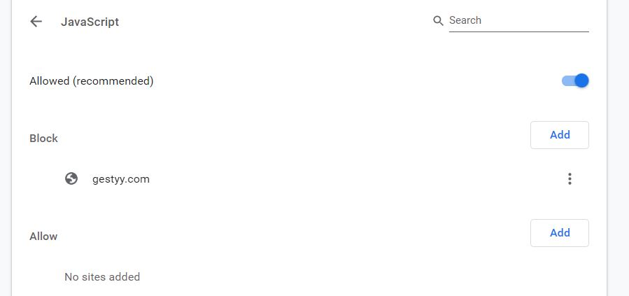

#8th Blog
The Gestyy virus
The what virus?


This was very interesting for me as I assumed that by blocking the java script code what she essentially did was block all the visual elements designed for the webpage. Therefore, the virus was still on her phone but due to her blocking the java script, all the visual aspects of the webpage were not assessable anymore. Yet the HTML basis for the web page was still showing and that is why she was now getting a blank redirect instead. So, in order to get rid of the virus she googled and came across the HowToRemove.Guide site that told her of all the possible things she could do to try remove the virus. The first steps instructed were to clear all her browsing data, cache and cookies on her browser. That didn’t seem to work, but it was also suggested that the virus could have come from apps installed on her phone. Recently she had installed a violin tuning app, she uninstalled it and the Gestyy virus was gone. After some research it is said that File-bundling is currently the most widespread distribution method for apps of the browser hijacker type. File bundling is often used by app designers as it allows to group or bundle a whole lot of files together in a compressed way, so the app takes up less data. Therefore, that was my interesting experience and my sisters very frustrating experience on the Gestyy virus. http://vswebessentials.com/features/bundling https://howtoremove.guide/gestyy-com-virus/